Eigensolvers and SVD¶
Hermitian eigensolver¶
Elemental provides a collection of routines for both full and partial solution of the Hermitian eigenvalue problem
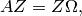
where A is the given Hermitian matrix, and unitary Z and real diagonal 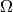 are sought. In particular, with the eigenvalues and corresponding eigenpairs labeled in non-decreasing order, the three basic modes are:
- Compute all eigenvalues or eigenpairs, 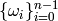 or 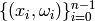.
- Compute the eigenvalues or eigenpairs with a given range of indices, say
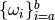 or 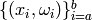,
with
 .
. - Compute all eigenpairs (or just eigenvalues) with eigenvalues lying in a particular half-open interval, either 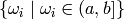 or 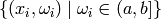.
As of now, all three approaches start with Householder tridiagonalization (ala HermitianTridiag) and then call Matthias Petschow and Paolo Bientinesi’s PMRRR for the tridiagonal eigenvalue problem.
Note
Please see the Tuning parameters section for information on optimizing the reduction to tridiagonal form, as it is the dominant cost in all of Elemental’s Hermitian eigensolvers.
Full spectrum computation¶
- void HermitianEig(UpperOrLower uplo, DistMatrix<double>& A, DistMatrix<double, VR, STAR>& w)¶
Compute the full set of eigenvalues of the double-precision real symmetric distributed matrix A.
- void HermitianEig(UpperOrLower uplo, DistMatrix<Complex<double>>& A, DistMatrix<double, VR, STAR>& w)¶
Compute the full set of eigenvalues of the double-precision complex Hermitian distributed matrix A.
- void HermitianEig(UpperOrLower uplo, DistMatrix<double>& A, DistMatrix<double, VR, STAR>& w, DistMatrix<double>& Z)¶
Compute the full set of eigenpairs of the double-precision real symmetric distributed matrix A.
- void HermitianEig(UpperOrLower uplo, DistMatrix<Complex<double>>& A, DistMatrix<double, VR, STAR>& w, DistMatrix<double>& Z)¶
Compute the full set of eigenpairs of the double-precision complex Hermitian distributed matrix A.
Index-based subset computation¶
- void HermitianEig(UpperOrLower uplo, DistMatrix<double>& A, DistMatrix<double, VR, STAR>& w, int a, int b)¶
Compute the eigenvalues of a double-precision real symmetric distributed matrix A with indices in the range 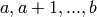.
- void HermitianEig(UpperOrLower uplo, DistMatrix<Complex<double>>& A, DistMatrix<double, VR, STAR>& w, int a, int b)¶
Compute the eigenvalues of a double-precision complex Hermitian distributed matrix A with indices in the range .
- void HermitianEig(UpperOrLower uplo, DistMatrix<double>& A, DistMatrix<double, VR, STAR>& w, DistMatrix<double>& Z, int a, int b)¶
Compute the eigenpairs of a double-precision real symmetric distributed matrix A with indices in the range .
- void HermitianEig(UpperOrLower uplo, DistMatrix<Complex<double>>& A, DistMatrix<double, VR, STAR>& w, DistMatrix<double>& Z)
Compute the eigenpairs of a double-precision complex Hermitian distributed matrix A with indices in the range .
Range-based subset computation¶
- void HermitianEig(UpperOrLower uplo, DistMatrix<double>& A, DistMatrix<double, VR, STAR>& w, double a, double b)¶
Compute the eigenvalues of a double-precision real symmetric distributed matrix A lying in the half-open interval
![(a,b]](../_images/math/cdf3085063293f29962808ba253dec1faa9866fb.png) .
.
- void HermitianEig(UpperOrLower uplo, DistMatrix<Complex<double>>& A, DistMatrix<double, VR, STAR>& w, double a, double b)¶
Compute the eigenvalues of a double-precision complex Hermitian distributed matrix A lying in the half-open interval
.
- void HermitianEig(UpperOrLower uplo, DistMatrix<double>& A, DistMatrix<double, VR, STAR>& w, DistMatrix<double>& Z, double a, double b)¶
Compute the eigenpairs of a double-precision real symmetric distributed matrix A with eigenvalues lying in the half-open interval
.
- void HermitianEig(UpperOrLower uplo, DistMatrix<Complex<double>>& A, DistMatrix<double, VR, STAR>& w, DistMatrix<double>& Z)
Compute the eigenpairs of a double-precision complex Hermitian distributed matrix A with eigenvalues lying in the half-open interval
.
Sorting the eigenvalues/eigenpairs¶
Since extra time is required in order to sort the eigenvalues/eigenpairs, they are not sorted by default. However, this can be remedied by the appropriate routine from the following list:
- void SortEig(DistMatrix<R, VR, STAR>& w)¶
Sort a column-vector of real eigenvalues into non-decreasing order.
- void SortEig(DistMatrix<R, VR, STAR>& w, DistMatrix<R>& Z)¶
Sort a set of real eigenpairs into non-decreasing order (based on the eigenvalues).
- void SortEig(DistMatrix<R, VR, STAR>& w, DistMatrix<Complex<R>>& Z)¶
Sort a set of real eigenvalues and complex eigenvectors into non-decreasing order (based on the eigenvalues).
Skew-Hermitian eigensolver¶
Essentially identical to the Hermitian eigensolver, HermitianEig; for any skew-Hermitian matrix 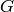, 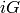 is Hermitian, as
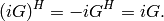
This fact implies a fast method for solving skew-Hermitian eigenvalue problems:
- Form in 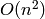 work (switching to complex arithmetic in the real case)
- Run a Hermitian eigensolve on , yielding 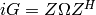.
- Recognize that
 provides an EVD of .
provides an EVD of .
Please see the HermitianEig documentation for more details.
Note
Please see the Tuning parameters section for information on optimizing the reduction to tridiagonal form, as it is the dominant cost in all of Elemental’s Hermitian eigensolvers.
Full spectrum computation¶
- void SkewHermitianEig(UpperOrLower uplo, DistMatrix<double>& G, DistMatrix<double, VR, STAR>& wImag)¶
Compute the full set of eigenvalues of the double-precision real skew-symmetric distributed matrix G.
- void SkewHermitianEig(UpperOrLower uplo, DistMatrix<Complex<double>>& G, DistMatrix<double, VR, STAR>& wImag)¶
Compute the full set of eigenvalues of the double-precision complex skew-Hermitian distributed matrix G.
- void SkewHermitianEig(UpperOrLower uplo, DistMatrix<double>& G, DistMatrix<double, VR, STAR>& wImag, DistMatrix<Complex<double>>& Z)¶
Compute the full set of eigenpairs of the double-precision real skew-symmetric distributed matrix G.
- void SkewHermitianEig(UpperOrLower uplo, DistMatrix<Complex<double>>& G, DistMatrix<double, VR, STAR>& wImag, DistMatrix<Complex<double>>& Z)¶
Compute the full set of eigenpairs of the double-precision complex skew-Hermitian distributed matrix G.
Index-based subset computation¶
- void SkewHermitianEig(UpperOrLower uplo, DistMatrix<double>& G, DistMatrix<double, VR, STAR>& wImag, int a, int b)¶
Compute the eigenvalues of a double-precision real skew-symmetric distributed matrix G with indices in the range .
- void SkewHermitianEig(UpperOrLower uplo, DistMatrix<Complex<double>>& G, DistMatrix<double, VR, STAR>& wImag, int a, int b)¶
Compute the eigenvalues of a double-precision complex skew-Hermitian distributed matrix G with indices in the range .
- void SkewHermitianEig(UpperOrLower uplo, DistMatrix<double>& G, DistMatrix<double, VR, STAR>& wImag, DistMatrix<Complex<double>>& Z, int a, int b)¶
Compute the eigenpairs of a double-precision real skew-symmetric distributed matrix G with indices in the range .
- void SkewHermitianEig(UpperOrLower uplo, DistMatrix<Complex<double>>& G, DistMatrix<double, VR, STAR>& wImag, DistMatrix<Complex<double>>& Z)
Compute the eigenpairs of a double-precision complex skew-Hermitian distributed matrix G with indices in the range .
Range-based subset computation¶
- void SkewHermitianEig(UpperOrLower uplo, DistMatrix<double>& G, DistMatrix<double, VR, STAR>& wImag, double a, double b)¶
Compute the eigenvalues of a double-precision real skew-symmetric distributed matrix G lying in the half-open interval 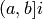.
- void SkewHermitianEig(UpperOrLower uplo, DistMatrix<Complex<double>>& G, DistMatrix<double, VR, STAR>& wImag, double a, double b)¶
Compute the eigenvalues of a double-precision complex skew-Hermitian distributed matrix G lying in the half-open interval .
- void SkewHermitianEig(UpperOrLower uplo, DistMatrix<double>& G, DistMatrix<double, VR, STAR>& wImag, DistMatrix<Complex<double>>& Z, double a, double b)¶
Compute the eigenpairs of a double-precision real skew-symmetric distributed matrix G with eigenvalues lying in the half-open interval .
- void SkewHermitianEig(UpperOrLower uplo, DistMatrix<Complex<double>>& G, DistMatrix<double, VR, STAR>& wImag, DistMatrix<Complex<double>>& Z)
Compute the eigenpairs of a double-precision complex skew-Hermitian distributed matrix G with eigenvalues lying in the half-open interval .
Hermitian generalized-definite eigensolvers¶
The following Hermitian generalized-definite eigenvalue problems frequently
appear, where both  and
and  are Hermitian, and is
additionally positive-definite:
are Hermitian, and is
additionally positive-definite:
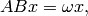
which is denoted with the value ABX via the HermitianGenDefiniteEigType enum,
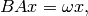
which uses the BAX value, and finally
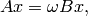
which uses the AXBX enum value.
- type HermitianGenDefiniteEigType¶
An enum for specifying either the ABX, BAX, or AXBX generalized eigenvalue problems (described above).
Full spectrum computation¶
- void HermitianGenDefiniteEig(HermitianGenDefiniteEigType type, UpperOrLower uplo, DistMatrix<double>& A, DistMatrix<double>& B, DistMatrix<double, VR, STAR>& w)¶
Compute the full set of eigenvalues of a generalized EVP involving the double-precision real symmetric distributed matrices A and B, where B is also positive-definite.
- void HermitianGenDefiniteEig(HermitianGenDefiniteEigType type, UpperOrLower uplo, DistMatrix<Complex<double>>& A, DistMatrix<Complex<double>>& B, DistMatrix<double, VR, STAR>& w)¶
Compute the full set of eigenvalues of a generalized EVP involving the double-precision complex Hermitian distributed matrices A and B, where B is also positive-definite.
- void HermitianGenDefiniteEig(HermitianGenDefiniteEigType type, UpperOrLower uplo, DistMatrix<double>& A, DistMatrix<double>& B, DistMatrix<double, VR, STAR>& w, DistMatrix<double>& Z)¶
Compute the full set of eigenpairs of a generalized EVP involving the double-precision real symmetric distributed matrices A and B, where B is also positive-definite.
- void HermitianGenDefiniteEig(HermitianGenDefiniteEigType type, UpperOrLower uplo, DistMatrix<Complex<double>>& A, DistMatrix<Complex<double>>& B, DistMatrix<double, VR, STAR>& w, DistMatrix<double>& Z)¶
Compute the full set of eigenpairs of a generalized EVP involving the double-precision complex Hermitian distributed matrices A and B, where B is also positive-definite.
Index-based subset computation¶
- void HermitianGenDefiniteEig(HermitianGenDefiniteEigType type, UpperOrLower uplo, DistMatrix<double>& A, DistMatrix<double>& B, DistMatrix<double, VR, STAR>& w, int a, int b)¶
Compute the eigenvalues with indices in the range of a generalized EVP involving the double-precision real symmetric distributed matrices A and B, where B is also positive-definite.
- void HermitianGenDefiniteEig(HermitianGenDefiniteEigType type, UpperOrLower uplo, DistMatrix<Complex<double>>& A, DistMatrix<Complex<double>>& B, DistMatrix<double, VR, STAR>& w, int a, int b)¶
Compute the eigenvalues with indices in the range of a generalized EVP involving the double-precision complex Hermitian distributed matrices A and B, where B is also positive-definite.
- void HermitianGenDefiniteEig(HermitianGenDefiniteEigType type, UpperOrLower uplo, DistMatrix<double>& A, DistMatrix<double>& B, DistMatrix<double, VR, STAR>& w, DistMatrix<double>& Z, int a, int b)¶
Compute the eigenpairs with indices in the range of a generalized EVP involving the double-precision real symmetric distributed matrices A and B, where B is also positive-definite.
- void HermitianGenDefiniteEig(HermitianGenDefiniteEigType type, UpperOrLower uplo, DistMatrix<Complex<double>>& A, DistMatrix<Complex<double>>& B, DistMatrix<double, VR, STAR>& w, DistMatrix<double>& Z)
Compute the eigenpairs with indices in the range of a generalized EVP involving the double-precision complex Hermitian distributed matrices A and B, where B is also positive-definite.
Range-based subset computation¶
- void HermitianGenDefiniteEig(HermitianGenDefiniteEigType type, UpperOrLower uplo, DistMatrix<double>& A, DistMatrix<double>& B, DistMatrix<double, VR, STAR>& w, double a, double b)¶
Compute the eigenvalues lying in the half-open interval
of a
generalized EVP involving the double-precision real symmetric distributed
matrices A and B, where B is also positive-definite.
- void HermitianGenDefiniteEig(HermitianGenDefiniteEigType type, UpperOrLower uplo, DistMatrix<Complex<double>>& A, DistMatrix<Complex<double>>& B, DistMatrix<double, VR, STAR>& w, double a, double b)¶
Compute the eigenvalues lying in the half-open interval
of a
generalized EVP involving the double-precision complex Hermitian distributed
matrices A and B, where B is also positive-definite.
- void HermitianGenDefiniteEig(HermitianGenDefiniteEigType type, UpperOrLower uplo, DistMatrix<double>& A, DistMatrix<double>& B, DistMatrix<double, VR, STAR>& w, DistMatrix<double>& Z, double a, double b)¶
Compute the eigenpairs whose eigenvalues lie in the half-open interval
of a generalized EVP involving the double-precision
real symmetric distributed matrices A and B, where B is also
positive-definite.
- void HermitianGenDefiniteEig(HermitianGenDefiniteEigType type, UpperOrLower uplo, DistMatrix<Complex<double>>& A, DistMatrix<Complex<double>>& B, DistMatrix<double, VR, STAR>& w, DistMatrix<double>& Z)
Compute the eigenpairs whose eigenvalues lie in the half-open interval
of a generalized EVP involving the double-precision complex
Hermitian distributed matrices A and B, where B is also
positive-definite.
Unitary eigensolver¶
Not yet written, will likely be based on Ming Gu’s unitary Divide and Conquer algorithm for unitary Hessenberg matrices.
Normal eigensolver¶
Not yet written, will likely be based on Angelika Bunse-Gerstner et al.’s Jacobi-like method for simultaneous diagonalization of the commuting Hermitian and skew-Hermitian portions of the matrix.
Schur decomposition¶
Not yet written, will likely eventually include Greg Henry et al.’s and Robert Granat et al.’s approaches.
Hermitian SVD¶
Given an eigenvalue decomposition of a Hermitian matrix , say
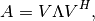
where  is unitary and
is unitary and  is diagonal and real.
Then an SVD of can easily be computed as
is diagonal and real.
Then an SVD of can easily be computed as
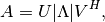
where the columns of  equal the columns of , modulo sign
flips introduced by negative eigenvalues.
equal the columns of , modulo sign
flips introduced by negative eigenvalues.
- void HermitianSVD(UpperOrLower uplo, DistMatrix<F>& A, DistMatrix<typename Base<F>::type, VR, STAR>& s, DistMatrix<F>& U, DistMatrix<F>& V)¶
Return a vector of singular values,
 , and the left and right
singular vector matrices, and , such that
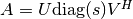.
, and the left and right
singular vector matrices, and , such that
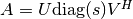.
- void HermitianSingularValues(UpperOrLower uplo, DistMatrix<F>& A, DistMatrix<typename Base<F>::type, VR, STAR>& s)¶
Return the singular values of
in s. Note that the appropriate
triangle of A is overwritten during computation.
Polar decomposition¶
Every matrix can be written as 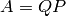, where  is
unitary and
is
unitary and  is Hermitian and positive semi-definite. This is known as
the polar decomposition of and can be constructed as
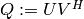 and 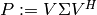, where
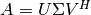 is the SVD of . Alternatively, it can be
computed through Halley iteration.
is Hermitian and positive semi-definite. This is known as
the polar decomposition of and can be constructed as
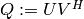 and 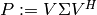, where
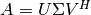 is the SVD of . Alternatively, it can be
computed through Halley iteration.
- void Polar(Matrix<F>& A, Matrix<F>& P)¶
- void Polar(DistMatrix<F>& A, DistMatrix<F>& P)¶
Compute the polar decomposition of
, , returning
within A and within P. The current implementation
first computes the SVD.
- void Halley(Matrix<F>& A, typename Base<F>::type upperBound)¶
- void Halley(DistMatrix<F>& A, typename Base<F>::type upperBound)¶
Overwrites
with the from the polar decomposition using
a simple QR-based Halley iteration. TODO: better explanation
- void QDWH(Matrix<F>& A, typename Base<F>::type lowerBound, typename Base<F>::type upperBound)¶
- void QDWH(DistMatrix<F>& A, typename Base<F>::type lowerBound, typename Base<F>::type upperBound)¶
Overwrites
with the from the polar decomposition using
a QR-based dynamically weighted Halley iteration.
TODO: better explanation
SVD¶
Given a general matrix , the Singular Value Decomposition is the
triplet 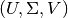 such that
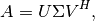
where and are unitary, and  is diagonal with
non-negative entries.
is diagonal with
non-negative entries.
- void SVD(Matrix<F>& A, Matrix<typename Base<F>::type>& s, Matrix<F>& V)¶
- void SVD(DistMatrix<F>& A, DistMatrix<typename Base<F>::type, VR, STAR>& s, DistMatrix<F>& V)¶
Overwrites A with
, s with the diagonal entries of , and V with .
- void SingularValues(Matrix<F>& A, Matrix<typename Base<F>::type>& s)¶
- void SingularValues(DistMatrix<F>& A, DistMatrix<typename Base<F>::type, VR, STAR>& s)¶
Forms the singular values of
in s. Note that A is overwritten in order to compute the singular values.